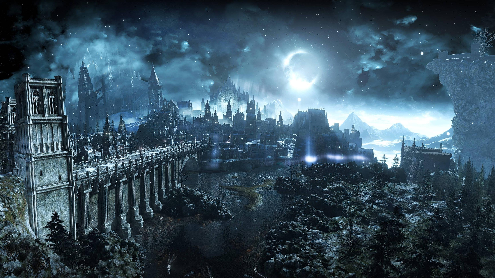
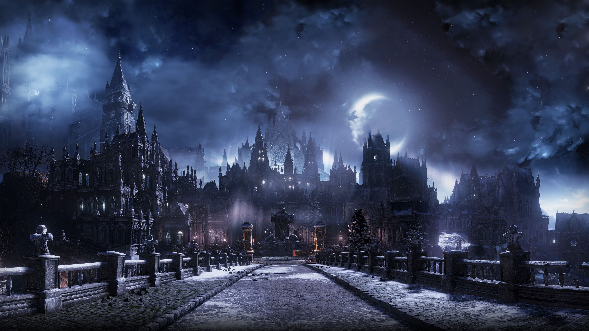
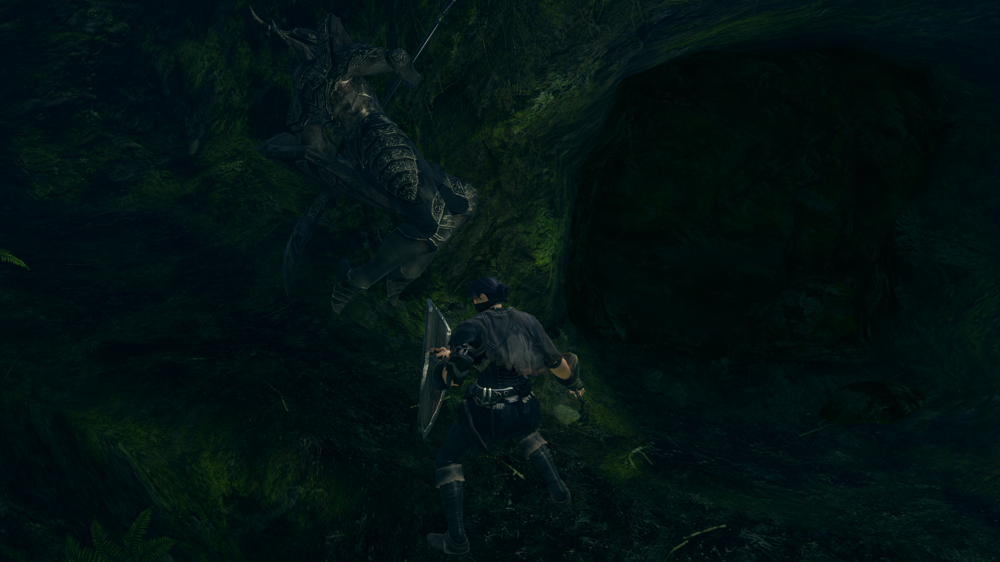
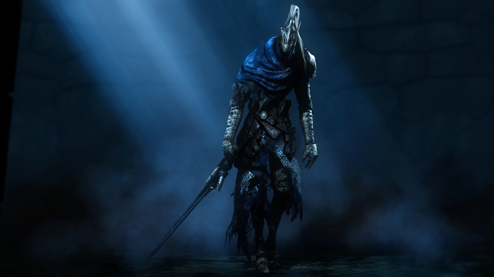

Introdução
 Na era dos anciões, o mundo era sem forma, envolto por nevoa. Uma terra com penhascos cinzas, árvores gigantes e dragões eternos. Mas então, houve fogo. E com o fogo, veio a disparidade. Calor e frio, vida e morte, e é claro, luz e trevas. E então, das trevas, eles vieram , e encontraram as Almas dos Senhores no interior da chama. Nito, o Primeiro dos Mortos. A Bruxa de Izalith e suas filhas do caos. Gwyn, o Senhor da Luz Solar e seus fiéis cavaleiros. E o Furtivo Pigmeu, tão facilmente esquecido. Com a Força dos Lordes, eles desafiaram os dragões. Os poderosos raios de Gwyn despedaçaram suas escamas de pedra. As bruxas lançaram grandes tempestades de fogo. Nito desencadeou um miasma de morte e doenças . E Seath o Desprovido de Escamas traiu os seus semelhantes, e foi o fim dos dragões. Assim começou a Era do Fogo. Mas logo, as chamas irão desaparecer, e restarão apenas Trevas. Mesmo agora, restam apenas brasas, e o homem não vê luz, mas apenas noites intermináveis. E entre os vivos são vistos, os portadores do amaldiçoado Sinal das Trevas. E esse é o prólogo de um dos jogos mais fascinantes já criados de todos os tempos. Enfim, foi muito tempo pesquisando o lore no jogo e em fóruns gringos, até então na época informação "Br" era quase nula, um quadro que mudou bastante nos últimos anos, apesar de certas traduções um pouco tortuosas. Anos depois, resolvi tentar montar os fatos sob minha ótica, mas claro, respeitando o enredo. E em português! Importante ressaltar que o jogo é extremamente interpretativo, sem uma linha temporal definida, algo que gera muitas teorias, o que não dá o direito de alguém afirmar com 100% de certeza quase nada que o jogo já não nos propõe. Aqui tentarei mostrar o enredo de forma cronológica, apesar de não existir nenhuma cronologia oficial, e explicando no processo.Os Lordes das Almas surgem
Um mundo disforme, cinzento e cheio de névoa. As Serpentes Primordiais viviam no abismo, ocultas, e os dragões eternos dominavam. Foi então que por uma casualidade do destino, a chama primordial “nasceu”. Causando disparidade, diferindo as leis que regiam o mundo e criando um "equilíbrio" das forças naturais nesse local tão singular. Em nenhum momento é retratado sobre o que os Lords eram exatamente antes de conseguirem "evoluir". Provavelmente, uma população ignorada ou subjugada pelas forças da natureza imortais que eram os dragões. Eles podem ter sido “pigmeus”, uma espécie de raça ancestral dos humanos, que evoluíram ao patamar dos lords quando conseguiram o poder das almas diretamente da "chama" que nasceu. Apesar de existir indícios de raças já difundidas nessa “sociedade” que vivia às sombras dos dragões.Os Lords, agora munidos com poder, talvez fossem capazes de derrotar os dragões e assumir o domínio, então a guerra começou. Seath, extremamente inteligente e oportuno, se aproximou dos Lords expondo as fraquezas dos seus irmãos, com planos futuros em mente. Mas o que levaria um dragão a trair os seus irmãos e destroçar a soberania de sua própria raça? Seath não possuía escamas, que são os requisitos básicos dos dragões eternos. Logo, ele pode ter sido excluído dos demais dragões por sua “inferioridade”, e ele fez isso por vingança. Ele também pode ter feito isso por pura inveja, ou ambos! Você escolhe como pensar. Esse é o esquema de Darksouls, pense, teorize, interprete. Só não exagere também... Com as informações do dragão albino, os Lords venceram os dragões e Gwyn se tornou o governante da nova era. O mundo muda completamente, sociedades e reinos são fundados.
Anor Londo
A cidade suprema dos deuses localizada em Lordran foi estabelecida, e de lá Gwyn governou e diversificou a sociedade dos deuses pelo mundo. Seath foi recompensado com o título de Duke e ganhou espaço em Londo, como também ganhou um fragmento da Lord Soul de Gwyn, recompensa por sua grande ajuda na luta contra os dragões. Foram estabelecidos os 4 cavaleiros pessoais de Gwyn, os mais habilidosos e importantes, com títulos e responsabilidades. Os cavaleiros de prata, deuses, entre outros, uma organização social e hierárquica. O que acabou se difundindo pelo resto do mundo.O Furtivo Pigmy e a Darksign
 Pigmy, aquele que obteve a “Dark Soul”. Não se sabe o que aconteceu com ele na guerra dos Lords contra os
dragões, muito provavelmente foi manipulado pelas serpentes do abismo e ficou por “baixo dos panos” na
história, planejando algo, talvez. São muitas as teorias em volta desse personagem fascinante de se abordar.
Uma que gosto bastante (apesar de não ter prova alguma) é a que ele é Manus.
Um pensamento que segue com essa teoria é que ele era ciente da capacidade dos humanos de se igualar aos
Lords. Ele observou os reinos, as leis e os deuses "de longe", notando que os humanos eram capazes de
façanhas incríveis.
Assim desenvolveu um plano para que um humano destronasse Gwyn. Talvez, ele queria destruir esse mundo
governado pelo fogo... não sabemos. Ainda em TEORIA, com a ajuda das serpentes ele foi o responsável por
criar a Darksign, a maldição que assolou o mundo e atingiu seus prováveis descendentes, os humanos.
Mas o que traria de bom uma maldição tão devastadora que atingiu tantas raças para um simples humano?
Undead (morto-vivo), um ser incapaz de ter o “eterno descanso”, forçado a sempre voltar a vida e sofrer
novamente até que sua alma não aguente e se torne um "hollow", uma casca sem humanidade ou sanidade. Estar
sempre em busca de “humanidades” para se manter sã, e tentar continuar com “força”. Pode parecer um destino
cruel, mas evoluir nesse processo é um resultado potencial também.
Pigmy, aquele que obteve a “Dark Soul”. Não se sabe o que aconteceu com ele na guerra dos Lords contra os
dragões, muito provavelmente foi manipulado pelas serpentes do abismo e ficou por “baixo dos panos” na
história, planejando algo, talvez. São muitas as teorias em volta desse personagem fascinante de se abordar.
Uma que gosto bastante (apesar de não ter prova alguma) é a que ele é Manus.
Um pensamento que segue com essa teoria é que ele era ciente da capacidade dos humanos de se igualar aos
Lords. Ele observou os reinos, as leis e os deuses "de longe", notando que os humanos eram capazes de
façanhas incríveis.
Assim desenvolveu um plano para que um humano destronasse Gwyn. Talvez, ele queria destruir esse mundo
governado pelo fogo... não sabemos. Ainda em TEORIA, com a ajuda das serpentes ele foi o responsável por
criar a Darksign, a maldição que assolou o mundo e atingiu seus prováveis descendentes, os humanos.
Mas o que traria de bom uma maldição tão devastadora que atingiu tantas raças para um simples humano?
Undead (morto-vivo), um ser incapaz de ter o “eterno descanso”, forçado a sempre voltar a vida e sofrer
novamente até que sua alma não aguente e se torne um "hollow", uma casca sem humanidade ou sanidade. Estar
sempre em busca de “humanidades” para se manter sã, e tentar continuar com “força”. Pode parecer um destino
cruel, mas evoluir nesse processo é um resultado potencial também.
A Dark Hand, a arte da drenagem de vida, usada pelos Darkwraiths para roubar humanidades esta diretamente ligada com a Darksoul, creio que de alguma forma Pigmy fragmentou essa Lord Soul nos humanos em "humanitys", dando a capacidade de as usarem para se fortalecer. Dessa forma, como descendentes da Darksoul, poderiam se tornar o Darklord e acabar com Age of Fire, dando inicio finalmente a Age of Dark, um reino controlado por humanos. Quanta vezes a palavra “Dark” foi repetida... Eles transformaram a simples ação de morrer num jogo em uma filosofia de progressão no próprio enredo do jogo. Puta sacada genial. Palmas pessoal, palmas.
A guarda pessoal de Gwyn
Os Quatro Cavaleiros que ganharam o título de "melhores" por suas grandes façanhas no combate aos dragões. Cada um tinha um papel específico, (ou quase) sob o comando de Gwyn. Não dá pra saber exatamente quais eram as raças destes também, creio que eles atingiram o status e o poder de semi-deuses de alguma forma, dados pelo Deus da Luz.》The Dragon Slayer Ornstein (O Matador de Dragões) Era capitão dos cavaleiros de Gwyn e provavelmente o líder dos Quatro, talvez por sua maturidade e experiência em combate. Também responsável por uma das lutas mais incríveis do jogo, com sua parceria depeso psicopata, Smough.
》Lord’s Blade Ciaran (Senhora das Laminas)
Foi a única mulher entre os Quatro, e grande especialista em missões de assassinato, graças a sua furtiva habilidade com laminas. Também liderava o grupo dos “Senhores das Laminas”, uma espécie de milícia de operações de espionagem e assassinato.
》Gough Hawkeye (Olho de falcão)
Provavelmente da raça dos gigantes, liderava os "Grandes Arqueiros". Fato interessante é que mesmo após ter ficado "cego", ainda foi capaz de acertar uma flecha NA PORRA DE UM DRAGÃO NO AR, apenas.
》Artorias, The Abysswalker (A tradução aqui tira a graça do nome...)
Ele não liderava nenhum batalhão, mas, creio que ele era uma espécie de agente de combate pessoal escolhido para determinadas missões que talvez só ele podia resolver, devido suas grandes habilidades, uma espécie de "exercito de um homem só".
Foi quando o Abismo começou a se expandir consideravelmente, que Gwyn resolveu agir e mandou Artorias pra resolver pessoalmente e lidar com os Darkwraiths. Ele era habilidoso e derrotou inúmeros desses sugadores de vida, foram inúmeras batalhas, tantas que a espada de Artorias se amaldiçoou por cortar centenas, talvez milhares dessas criaturas. Isso começou antes de New Londo ser submersa e se estendeu diretamente para o profundo Abyss. Artorias tinha grandes amigos, Sif, o Grande Lobo Cinzento (ainda filhote aqui) e a Grande Felina Alvina, o acompanhando na missão. Tudo acabou se complicando ao se aprofundar no Abismo, numa tentativa de salvar seus amigos, ele fez um acordo com Kaathe para entrar no seuconvenant, ganhando um anel como simbologia do pacto e obtendo a capacidade de andar no abismo para salvar seus companheiros. Voltando a Anor Londo, foi tratado como um herói, apesar de não ter sido o responsável por ter afundado New Londo ou sequer parado o Abismo. Sim, ele só pegou a fama, mas em contra partida salvou seus amigos, e eu adoro personagens superestimados com enredos internos ao naipe de "grande história jamais contada". Irei falar disso mais pra frente.
Temam o avanço do abismo
É então que Gwyn e seu tio Lloyd, "O Pai de Todos", se voltam contra os humanos ao perceber seu descontrole, como foi no caso de New Londo. Importante dizer que os humanos adoradores de Gwyn estavam parcialmente livres desse ódio. Creio que Lloyd decide que os Undeads são os culpados do enfraquecimento da “chama”, e se continuar assim será irreversível. Decreta então que a missão da Way of White, igreja dos adoradores de Gwyn, seja caça-los e alimentar as Bonfires (fogueiras) com seus ossos, (já que os undeads possuem humanidades dentro de si), numa tentativa de prolongar a idade do fogo. Vocês já devem ter percebido que há um conceito bem subjetivo em Dark Souls, os elementos do jogo que compõe
as lendas não são bem explicados e detalhados, o que pode não facilitar seu entendimento, por isso é
necessário uma tentativa mais aguçada de compreensão e imaginação.
Então vou expor uma visão minha, adicionando outras no processo, afinal depois de tantas pesquisas e
leituras no passar dos anos é muito difícil falar algo sem pensar em inúmeras possibilidades e teorias já
vistas por aí.
As “Bonfires” em Darksouls, são um complexo de fogueiras que se ligam, ou se “linkam” como prefiro falar.
Elas mantém a “Chama”, aquela que causou a disparidade, acesa, o que altera diretamente na vida dos deuses
que adotaram as Lord Souls provenientes da própria “Chama Primordial”.
Em outra palavras, se a "chama primordial” enfraquecer, ou pior, apagar, os deuses “irão se ferrar” e a era
das trevas irá começar.
E como deixar a chama acesa?
Com almas ou humanidades. Que também são partes fragmentadas provenientes da Darksoul.
Vocês já devem ter percebido que há um conceito bem subjetivo em Dark Souls, os elementos do jogo que compõe
as lendas não são bem explicados e detalhados, o que pode não facilitar seu entendimento, por isso é
necessário uma tentativa mais aguçada de compreensão e imaginação.
Então vou expor uma visão minha, adicionando outras no processo, afinal depois de tantas pesquisas e
leituras no passar dos anos é muito difícil falar algo sem pensar em inúmeras possibilidades e teorias já
vistas por aí.
As “Bonfires” em Darksouls, são um complexo de fogueiras que se ligam, ou se “linkam” como prefiro falar.
Elas mantém a “Chama”, aquela que causou a disparidade, acesa, o que altera diretamente na vida dos deuses
que adotaram as Lord Souls provenientes da própria “Chama Primordial”.
Em outra palavras, se a "chama primordial” enfraquecer, ou pior, apagar, os deuses “irão se ferrar” e a era
das trevas irá começar.
E como deixar a chama acesa?
Com almas ou humanidades. Que também são partes fragmentadas provenientes da Darksoul.
É nessa época que creio que houveram muitos conflitos internos, fatos que por suas "trivialidades" só podem ter acontecido em um tempo pertinente à isso. Como o banimento do deus da guerra, filho de Gwyn. Ou Seath ficando cada vez mais poderoso e insano, o corte de relações de Velka com a maioria do panteão dos deuses de Anor, Havel se tornando bispo da Way of White, entre outros.
O medo gera o Caos
Lost Izalith, localizada abaixo de Anor, lar da pyromancia e da grandiosa Bruxa Izalith, que travou batalhas "quentes" contra os dragões junto com suas filhas. Izalith, percebendo o avanço do abismo e o enfraquecimento da “chama primordial”, tem a maluca ideia de recriar a mesma a partir de sua Lordsoul. Pode ter sido prepotência, ou desespero ou ambos. Isso acarreta na segunda grande tragédia generalizada causada por um Lord e sua Lordsoul. Ela cria acidentalmente uma chama corrompida, a Chama do Caos. Não conseguindo controlar, é consumida, se
tornando a Bed of Chaos, um demônio que num efeito cataclísmico destrói a arquitetônica cidade com lava e
fogo, envolvendo suas filhas e filho, os consumindo no processo também. Os sobreviventes se tornam demônios
e Lost Izalith acaba virando um antro dessas criaturas amaldiçoadas.
Gwyn, ciente de mais uma tragédia, manda seus Silver Knights para o local numa tentativa frustada de parar o
avanço dos demônios. Fazendo com que seus cavaleiros de prata sejam transformados em Black Knights, graças
ao fogo do local e dos demônios, e consequentemente fazendo sua armadura resistente à isso.
Claro, para os que sobreviveram.
Para os pensam que eles ficaram queimados em outra situação, é só ler a descrição do escudo dos Black
Knights .
Ela cria acidentalmente uma chama corrompida, a Chama do Caos. Não conseguindo controlar, é consumida, se
tornando a Bed of Chaos, um demônio que num efeito cataclísmico destrói a arquitetônica cidade com lava e
fogo, envolvendo suas filhas e filho, os consumindo no processo também. Os sobreviventes se tornam demônios
e Lost Izalith acaba virando um antro dessas criaturas amaldiçoadas.
Gwyn, ciente de mais uma tragédia, manda seus Silver Knights para o local numa tentativa frustada de parar o
avanço dos demônios. Fazendo com que seus cavaleiros de prata sejam transformados em Black Knights, graças
ao fogo do local e dos demônios, e consequentemente fazendo sua armadura resistente à isso.
Claro, para os que sobreviveram.
Para os pensam que eles ficaram queimados em outra situação, é só ler a descrição do escudo dos Black
Knights .
A ascensão e o declínio de New Londo
New Londo era uma próspera cidade de humanos dominada por 4 reis, ela tinha sua cultura e era vizinha de Anor Londo. Os reis impressionaram Gwyn de alguma forma, talvez pelo modo de governar, fazer justiça ou qualquer coisa do tipo. O deus da Luz partilhou mais uma vez sua Lord Soul, e dessa parte dividiu entre os 4 que reinavam. Me pergunto o que faria Gwyn partilhar sua Lord Soul com humanos, ele devia ter planos bem grandes pra New Londo e deve ter ficado MUITO impressionado com esse 4 reis. Enfim, não demorou muito para que simples humanos se corrompessem com o poder e caíssem em declínio. Kaathe, uma das serpentes primordiais, provavelmente os manipulou, visando promover a era das trevas e conseguir o máximo de humanidades possíveis. A arte da drenagem de vidas, junto com os Darkwraiths, “Os inimigos dos homens e qualquer coisa viva que tenha alma” nasceram de uma New Londo já corrompida e junto com os 4 reis totalmente enlouquecidos aterrorizaram a cidade e as regiões próximas. Seres que só buscavam humanidades, sem nenhum traço dos humanos que já foram.“E teria de ser aqui onde eles iriam perecer. “
 Três feiticeiros tiveram a missão de selar a cidade (quem que mandou? não sabemos, talvez Gwyn? teria ele
apelado pra feiticeiros?), o que resulta em milhares de pessoas inocentes mortas, numa tentativa desesperada
de impedir o rápido avanço do Abismo. Uma cidade inteira sacrificada pra conter isso. New Londo foi
submersa, afundada à força, criando um amontoado de corpos no fundo.
Os espíritos perturbados das vítimas ainda assolam o local.
Três feiticeiros tiveram a missão de selar a cidade (quem que mandou? não sabemos, talvez Gwyn? teria ele
apelado pra feiticeiros?), o que resulta em milhares de pessoas inocentes mortas, numa tentativa desesperada
de impedir o rápido avanço do Abismo. Uma cidade inteira sacrificada pra conter isso. New Londo foi
submersa, afundada à força, criando um amontoado de corpos no fundo.
Os espíritos perturbados das vítimas ainda assolam o local.
Creio também que foi após essa época que a Darksign começou a se espalhar rapidamente, talvez ela já existia em terras distantes, mas chegou em Lordran mais ou menos nesse período. Talvez, com o enfraquecimento da chama se iniciando.
Conflitos internos
Gwyn está ainda mais temeroso com os últimos acontecimentos, somado aos avisos de Frampt, uma outra serpente primordial (que segue a vontade de que a chama continue viva, diferente de Kaathe). Ela deve ter alertado ao deus da Luz que um dia um undead iria desafia-lo para assumir o controle de tudo, ou ele pode simplesmente ter notado a capacidade dos humanos somada a "faca de dois gumes" que é a maldição undead, deixando-os ainda mais perigosos. Ou simplesmente, devia ter medo que a maldição se alastrasse e chegasse aos próprios deuses! Cada vez mais undeads nascem, até mesmo em Thorolund, lar dos clérigos devotos de Gwyn e da Way of White.É então que um desses Undeads, o Paladino Leeroy, o primeiro undead da Way of White, é convocado para uma missão "importante". Ele foi escolhido por sua fé e ganhou uma armadura sagrada, seguida do escudo Sanctus e o grande martelo Grant, todos criados por um grandioso ferreiro dos deuses. Sua importante tarefa é de achar a Rite of Kindling, um item especial que potencializaria as bonfires, consequentemente ajudando a manter a Age of Fire. Mas o item foi roubado por Pinwell, um necromancer ensandecido que está também roubando o poder (de alguma forma) de Nito, o Senhor das Sepulturas, um dos Lordes das almas que enfrentou os dragões eternos. Leeroy consegue chegar aos domínios de Nito, o que é algo lendário de se fazer, mas é morto em batalha e acaba nunca achando o que procurava. Mesmo assim, torna-se um mártir, reascendendo a fé dos seus companheiros clérigos de Thorolund, acionando centenas de expedições suicidas dos mesmos em busca do Rito nas catacumbas e nos domínios de Nito. Os clérigos undeads de Thorolund estavam indo em missões suicidas numa tentativa desesperada de achar o item, e tudo indica que Gwyn e Lloyd incentivavam isso, tentando usar seus crentes como massa de manobra. As atitudes de Gwyn apenas acentuam ainda mais a revolta de Havel, The Rock, que afinal, era um undead também.
 Havel tinha uma relação de desprezo com Seath, por ser um dragão, por nunca ter confiado nele como traidor da própria espécie, usar magias (uma ofensa aos milagres), fazer experiências macabras e ainda ter um local e título de prestigio em Anor Londo. É difícil saber exatamente o que o motivou, mas creio que essas coisas ajudaram bastante na sua revolta, então, Havel planeja uma secreta rebelião. Seath descobre a tentativa de rebelião e avisa a Gwyn, que mais decepcionado ainda com os humanos e com um grande amigo, ordena a prisão do mesmo. Uma batalha se inicia entre Seath e as forças rebeldes, uma confusão generalizada. Resumindo, os rebeldes são mortos e Havel é preso em uma torre. Sim, pra mim Havel está preso naquela torre, mas existem teorias diferentes quanto a isso. Acredito que Crossbreed Priscilla tenha sido criada nessa época. As razões da sua criação são mistério e até hoje e não considero nenhuma teoria realmente pertinente, mas sei que envolve Seath, e Velka direta ou indiretamente. Uma criatura metade dragão e outra coisa, (talvez uma espécie proveniente dos deuses), é criada, considerada uma "abominação da natureza que infringe todas as leis", sendo protegida por Velka e "selada" num mundo de criaturas não naturais que podem viver em paz, Ariamis.
 Enquanto isso creio que tenha sido uma época muito plausível pra que os eventos de Oolacile tenham engrenado. Talvez um pouco depois, antes ou durante, não importa, essa foi a faixa de tempo em que ocorreu, essa época "pós anciã".
Oolacile, Manus e a verdade sobre a lenda de Artorias
Assim como New Londo, Oolacile foi uma cidade próspera vítima do Abismo, apesar dos fatos terem sido um pouco diferentes aqui. Uma grande criatura assola a cidade trazendo consigo escuridão, espalhando e infectando tudo e todos com ela. Tal criatura, Manus, parece estar atrás de algo, ou alguém. Tudo indica que a serpente pode ter manipulado alguém da cidade para perturbar o local de descanso do mesmo. Manus foi um humano primitivo, cuja humanidade foi a loucura, talvez corrompida pelo próprio abismo e acabou
se tornando uma besta obscura, o Pai do Abismo. Há muitas teorias que dizem que ele foi Pigmy, e faria sim
sentido, mas não é nada claro, e você tem que interpretar ou deduzir como quiser.
Pessoalmente acredito que seja o Pigmy corrompido pelo abismo e pelo que sobrou da Darksoul, sua humanidade
enlouqueceu com influência do abismo e da sua Lordsoul, e o processo desencadeou a monstruosa transformação.
Por que digo ser Pigmy?
Bom, Manus foi um "homem primitivo", logo penso que ele era da mesma raça no mínimo, ou o próprio! Digo,
Pigmy sumiu, e muito provavelmente fez um acordo com as serpentes que o levaram para o abismo, e lá ele
permaneceu até que de alguma forma se corrompeu, porque acredito que para se transformar num "monstrão"
desses, deve ter sido algo bem especial, como a Darksoul.
Mas, claro, pura especulação.
Independente de quem foi, é agora uma criatura que está destruindo a cidade e procurando aumentar o abismo
ainda mais. Além de estar procurando obsessivamente seu " Broken Pendant". As pessoas da cidade vão se
transformando em monstros com certa semelhança física a Manus, e logo Oolacile cai em desgraça e fica em
ruínas.
Com todos esses problemas, Gwyn provavelmente dá a missão de conter o avanço do abismo, salvar a princesa de
Oolacile e derrotar Manus para Artorias. É então que o cavaleiro parte com seus dois singelos companheiros
pra resolver essa "fácil" missão. No futuro, a história é contada como Artorias não chegando a salvar a
cidade a tempo, mas salvando a princesa, Dusk, capturada por Manus, e morrendo para matar a besta do abismo
no processo. Gough e Ciaran desaparecem depois dos eventos.
Apenas Sif e Alvina retornaram, e apenas eles sabem a verdade, até que um evento temporal nos revela tudo.
Dusk carregava o pendant que Manus tanto queria, mas de alguma forma, ela fica presa em um Golem de cristal,
e permanece lá intacta através dos séculos. Até que o Chosen Undead a liberta, já em outra era, na que
jogamos.
Após acharmos o Pendant, que também foi cristalizado, mas dessa vez por outro golem, (de alguma forma),
Manus detecta a presença do item que ele tanto almeja e distorce o tempo, vindo diretamente do passado e nos
puxando do presente, para a época em que Oolacile estava em desgraça.
Manus foi um humano primitivo, cuja humanidade foi a loucura, talvez corrompida pelo próprio abismo e acabou
se tornando uma besta obscura, o Pai do Abismo. Há muitas teorias que dizem que ele foi Pigmy, e faria sim
sentido, mas não é nada claro, e você tem que interpretar ou deduzir como quiser.
Pessoalmente acredito que seja o Pigmy corrompido pelo abismo e pelo que sobrou da Darksoul, sua humanidade
enlouqueceu com influência do abismo e da sua Lordsoul, e o processo desencadeou a monstruosa transformação.
Por que digo ser Pigmy?
Bom, Manus foi um "homem primitivo", logo penso que ele era da mesma raça no mínimo, ou o próprio! Digo,
Pigmy sumiu, e muito provavelmente fez um acordo com as serpentes que o levaram para o abismo, e lá ele
permaneceu até que de alguma forma se corrompeu, porque acredito que para se transformar num "monstrão"
desses, deve ter sido algo bem especial, como a Darksoul.
Mas, claro, pura especulação.
Independente de quem foi, é agora uma criatura que está destruindo a cidade e procurando aumentar o abismo
ainda mais. Além de estar procurando obsessivamente seu " Broken Pendant". As pessoas da cidade vão se
transformando em monstros com certa semelhança física a Manus, e logo Oolacile cai em desgraça e fica em
ruínas.
Com todos esses problemas, Gwyn provavelmente dá a missão de conter o avanço do abismo, salvar a princesa de
Oolacile e derrotar Manus para Artorias. É então que o cavaleiro parte com seus dois singelos companheiros
pra resolver essa "fácil" missão. No futuro, a história é contada como Artorias não chegando a salvar a
cidade a tempo, mas salvando a princesa, Dusk, capturada por Manus, e morrendo para matar a besta do abismo
no processo. Gough e Ciaran desaparecem depois dos eventos.
Apenas Sif e Alvina retornaram, e apenas eles sabem a verdade, até que um evento temporal nos revela tudo.
Dusk carregava o pendant que Manus tanto queria, mas de alguma forma, ela fica presa em um Golem de cristal,
e permanece lá intacta através dos séculos. Até que o Chosen Undead a liberta, já em outra era, na que
jogamos.
Após acharmos o Pendant, que também foi cristalizado, mas dessa vez por outro golem, (de alguma forma),
Manus detecta a presença do item que ele tanto almeja e distorce o tempo, vindo diretamente do passado e nos
puxando do presente, para a época em que Oolacile estava em desgraça.
É então nos revelado que Artorias é gravemente ferido na sua luta com Manus, já que ele sacrificou seu escudo para proteger seu amigo, Sif, e acabou tendo seu braço inutilizado. A ferida do Abismo se mostra como uma maldição que consome a mente do cavaleiro, que se transforma em mais uma criatura tenebrosa, e certamente uma das mais ameaçadoras da já arruinada Oolacile.
Gough provavelmente já estava em Oolacile, ou foi lá pra ajudar seu amigo Artorias, o motivo não é claro. Mas de algum modo ele é trancado em uma torre (talvez pelas criaturas corrompidas da cidade) e tem seu elmo embalado em resina, o que deve ter provavelmente o deixado cego, numa tentativa de inutiliza-lo.
MESMO ASSIM ACERTOU A PORRA DUM DRAGÃO NO AR!
Chosen Undead enfrenta o quase consumido Artorias e o derrota, impedindo que ele faça algo de errado e deixando sua honra intacta, em outras palavras, salvando o cavaleiro do seu próprio destino. Ciaran, que com certeza era ligada emocionalmente a Artorias, pede a soul do cavaleiro para o Chosen Undead, e desaparece em seguida para nunca mais ser vista.
No "quintal" do abismo, Alvina faz com que o Chosen Undead também ajude Sif, que vira um grande aliado para derrotar Manus. Com a criatura abissal morta, Dusk é liberta das mãos de Manus (no passado), e oparadoxo temporal é firmado.
Como toda viagem temporal tende a ser complexa, e por um acaso você não entendeu, irei explicar.
O próprio Chosen salvou a princesa e Sif, derrotou Artorias, Manus e talvez um dos últimos dragões lendários, no passado, vindo do futuro trazido pelo próprio Manus que era do passado! Logo, o chosen do passado libertou Dusk de Manus, que foi aprisionada no golem de cristal e foi liberta pelo chosen undead no futuro.
Eu compliquei ainda mais?Acho que sim.
"uma grande história jamais contada". Eu gostaria muito que os outros 3 cavaleiros tivessem tido maior abrangência em seus plots, com certeza teríamos mais histórias incríveis!
Bom, Artorias ainda assim foi um herói. Não pelo que ele ficou conhecido, mas foi.
O caos gera o desespero
Entendam, Gwyn não era um mal governante, pelo contrário, o seu reino era próspero, ele era respeitado e adorado por muitos. O que aconteceu foi que a ordem foi corrompida. Inicialmente por Kaathe. Talvez Gwyn tenha errado no começo, depositando muita confiança nos outros, principalmente nos humanos, e isso acarretou muitos problemas. Primeiramente, o medo da Era do Fogo acabar, a decepção com aqueles que ele se importava, enfim, foram muitos eventos que deterioraram a mente dele. E isso chegou à um determinado extremo! Gwyn tomou a decisão mais desesperada que ele podia, apesar de corajosa... Partiu de Anor Londor, levando consigo alguns de seus guerreiros até Kiln of The First Flame, o local onde residia a Chama Primordial. Lá usou sua Lordsoul, ou o que sobrou dela, já que ele tinha particionado entre os 4 reis e Seath, (apesar de ser uma pequena parte), junto com ele mesmo de combustível para reascender a chama. No processo da grande "explosão de fogo", os cavaleiros que ele levou se tornaram carcaças de algo que uma vez foram, assim como Gwyn, que conseguiu atrasar o inevitável, e a partir daí ficou conhecido como Lord Cinder, o Senhor das Cinzas. Gwyndolin, seu filho mais novo criou uma grande tumba para seu pai, apesar do seu corpo não estar lá. Bem,
eu não creio que Solaire seja realmente o Deus da Guerra banido como muitos pensam, mas, creio que seja uma
teoria interessante, no mínimo. Enfim, independente de quem seja, o Deus da Guerra retorna a Anor, com
certeza envergonhado, sentindo-se culpado, deixando seu anel de luz e seu miracle, "Great Lightining Spear"
na tumba do seu pai, Gwyn.
Algo que eu considero muito foda.
Gwyndolin, seu filho mais novo criou uma grande tumba para seu pai, apesar do seu corpo não estar lá. Bem,
eu não creio que Solaire seja realmente o Deus da Guerra banido como muitos pensam, mas, creio que seja uma
teoria interessante, no mínimo. Enfim, independente de quem seja, o Deus da Guerra retorna a Anor, com
certeza envergonhado, sentindo-se culpado, deixando seu anel de luz e seu miracle, "Great Lightining Spear"
na tumba do seu pai, Gwyn.
Algo que eu considero muito foda.
A loucura de Seath e a decadência de Anor Londo
Seath era extremamente complexado com sua mortalidade, dada a ausência de suas escamas, ele pesquisava insanamente uma forma de imortalidade, conduzia experiências bizarras e foi um "pai da magia". Sua loucura e experiências só aumentavam com o passar do tempo, sem Gwyn para temer, isso ficouainda pior. Ele se interessou por Oolacile graças ao conhecimento de magias da população da cidade, apesar de serem mais "pacificas". Provavelmente daí se inspirou pra desenvolver novas magias mortais, ou ele podia já ter sondado os conhecimentos dessa cidade há muito tempo e achou pertinente agir da forma que quisesse nela, agora com Gwyn fora. Pelos indícios, Seath provavelmentebuscava o anel de Dusk, que dobravam o poder da feitiçaria. Elaprovavelmente temendo o uso do maníaco dragão, jogou o anel no fundo de um lago, que acabou sendo engolido por uma hydra. Seath então a aprisiona em um golem de cristal eprovavelmente nessa confusão, de alguma forma é separada do seu pendant (aquele que manus tanto queria), que fica na posse de outro golen de cristal, talvez numa tentativa de Seath de barganhar com Dusk. E talvez não tenha sido detectado por Manus todo esse tempo por estar dentro do golem, até o Chosen finalmente obtê-lo. Seath se torna cada vez mais louco, e continua com seus experimentos absurdos, capturando humanos e outras criaturas, Anor Londo não é mais um local seguro com tantos acontecimentos, e o deuses começam a abandonar a cidade até que ela fica vazia. O dragão pálido se isola em sua biblioteca na sua contínua busca por imortalidade.Gwyndolin permanece nas sombras, guardando a tumba do seu pai, e cria inúmeras ilusões para que a cidade tenha o aspecto grandioso que ela uma vez teve.
O destino do Chosen Undead
Frampt começa a espalhar o mito do “Escolhido” que deverá tocar os sinos para dar continuidade a era do fogo, ele muito provavelmente influenciou a decisão de Gwyndolin para criar a ilusão da sua irmã, Gwynevere, a Princesa da Luz Solar, no intuito de instruir alguém que conseguisse chegar lá passando por todos os desafios arquitetados do caminho (que são muitos). O undead capaz desse feito seria considerado o escolhido por Frampt para concretizar seu plano de manter a era do fogo viva, e muitos foram os que tentaram. Em contra partida ele disputa com Kaathe, que deseja justamente o contrário, que a era das trevas comece. Duas serpentes buscando manipular o destino, como sempre fizeram desde os tempos ainda mais antigos. Não dá pra saber qual o lado do “bem” entre os dois, acho que nem existe, você decide no que acreditar. A profecia conta que o escolhido irá começar sua peregrinação de Undead Asylun, uma prisão onde os undeads do mundo são jogados, numa tentativa mútua das pessoas de concretizarem o que foi profetizado. Um plano arquitetado por Frampt. É então que por mais umacasualidade do destino, Oscar of Astora, mais um guerreiro undead, solta um corpo de um hollow munido de uma chave numa das celas. Chosen Undead (o player) consegue escapar e encontra Oscar, agora ferido adiante, que o explica sobre a lenda e sua missão, já que estava incapacitado de cumpri-la, com certeza no limite da sua transformação hollow. Chosen derrota o demônio que feriu Oscar e provavelmente impedia que outros undeads incapazes escapassem do local, e parte pra fora do Asylum. É então que acontece a minha cena favorita DESSA SÉRIE, por toda sua poesia interpretativa, subjetiva e direção de arte impecável. Pode ter sido algo premeditado por Frampt, pode ser sido um plano de Velka (a divindade relacionada a corvos) ou pode simplesmente ter sido um fato randômico do destino, não importa. É então que ele chega em Lordran e parte para talvez cumprir o seu destino profetizado.